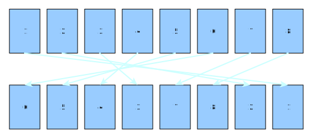

Nordic-RSE : I/O profiling and optimization
Simo Tuomisto
26.10.2021
Contents of this talk
- What kinds of IO problems occur in HPC environments?
- How do we spot them?
- How can they be solved?
Disclaimer
- I have worked a lot with I/O problems, but don’t take me for an authority on solving them. I suggest looking at what big players are doing.
- I/O frameworks move constantly, I might have missed some good tools. Let me know if you have good suggestions.
Why I/O problems are important?
- Shared filesystems have to deal with increased load, which can result in various problems
- Job execution slows down as CPU/RAM/GPU waits for I/O
- Bad I/O hampers interactive usage and waiting for I/O is very annoying as an user as it does not feel productive
What kinds of problems are there?
- Most common problems in my opinion (in no particular order):
- “ab != ba”-problem
- “Jenga”-problem
- “I hope I didn’t forget anything”-problem
- “She’ll have the steak”-problem
“ab != ba”-problem
In many fields of mathematics, all operations do not have the commutative property.
E.g. for matrices usually: AB ≠ BA
How is this related to I/O?
“ab != ba”-problem
- From coding perspective, both of these can produce the same results:
for parameter in parameters:
for datafile in datafiles:
data = load_data(datafile)
calculate_model(data, parameter)vs.
“ab != ba”-problem
- From I/O perspective, the code is not commutative:
for parameter in parameters:
for datafile in datafiles:
data = load_data(datafile) # <- I/O is multiplied
calculate_model(data, parameter)vs.
“ab != ba”-problem
- The problem might look trivial, but it is surprisingly hard to spot!
- Usually requires unraveling most of the workflow.
- When working with small data, this might not cause any problems.
“ab != ba”-problem
One way of spotting this is with
strace:If the number of IO operations scales with the number of parameters, something might be amiss.
“Jenga”-problem
- Closely related to the “ab != ba”-problem.
- First steps do not cause problems, but as time goes on the situation becomes more problematic due to constant I/O.

“Jenga”-problem
- I/O in machine learning is especially suspect to this problem as data will be iterated over multiple times
- Having a bad I/O pattern doesn’t matter for one epoch, but as training can consist of thousands of epochs, the overall result is bad
- Bad I/O patterns can result in bad GPU utilization in deep learning
“Jenga”-problem
- Using good data formats (e.g. Parquet, webdataset) and following best practice guides usually helps (e.g. Keras, Tensorflow and PyTorch have good guides)
“Jenga”-problem
Quick demo:
https://github.com/simo-tuomisto/data-format-tests
“I hope I didn’t forget anything”-problem
- It is quite common practice to carry everything that was in the initial data throughout the whole analysis
- Reducing the data size would reduce the needed resources (space, ram, etc.)
- Usually having a mapping between initial data and processed data would be sufficient
“I hope I didn’t forget anything”-problem
- This is especially problematic when working remotely as transferring full datasets is slower than transferring increments
- Problem can be minimized when using data analysis libraries such as pandas that allow for easy data merging from multiple sources
- This is closely related to the “She’ll have the steak”-problem
“She’ll have the steak”-problem
Quite often workflows happen in the following way:
- Data inspection tools are written to inspect data.
- Coding framework & data format is chosen based on how easy data is to load for inspection.
- Data needs to be used with a model / solver, but data format has already been chosen.
- Data fits to the model / solver poorly.
“She’ll have the steak”-problem
A better solution would be to look at the problem from the other end:
- Model / solver is chosen.
- Coding framework & data format is chosen based on how easy data is to use with a model.
- Data inspection tools are written based on the framework.
- Data fits well into the model / solver.
“She’ll have the steak”-problem
- Major frameworks usually have a preferred way of working with data (e.g. tidy data with Pandas, data loaders for deep learning toolkits, NetCDF for physics simulations, …)
- Downside is that one might need to write visualization tools with respect to the data formats needed by these frameworks
- Upside is other people are doing the same thing: there are lots of already existing tools
Profiling vs understanding
Profiling vs understanding
- Quite often when talking about I/O we’ll use terms such as
Megabytes per secondorI/O operations per second
- Profiling is good, but more often understanding what we’re trying to accomplish with the data is more important
- Knowing that you’re shoveling crap fast doesn’t help with the fact that you’re still shoveling crap
Profiling vs understanding
- Computers will try to do what they are told to do, even if that is inefficient
- Often we need to ask how the computer perceives what we’re telling it to do
Example in understanding a problem
Common problem in deep learning is related to randomness:
We want to randomize our data ordering for each epoch
Example in understanding a problem
- This is problematic, as random access is much slower than sequential access
- To fix this, we give up some degree of randomness for increased efficiency
Example in understanding a problem
Consider shuffling of a deck of playing cards:
Example in understanding a problem
Instead of shuffling the deck, we split the deck into multiple batches:
Example in understanding a problem
We shuffle the batches randomly:

Example in understanding a problem
We shuffle the data within each batch:
Example in understanding a problem
Is this ordering random enough?

More often than not, it is.
Example in understanding a problem
- This kind of IO can be done sequentially.
- We still get randomization, but not complete randomization.
- Vast majority of big data analysis uses this.
- This was used in the demo as well.
Conclusions
Conclusions
- I/O problems are often tied to the way we’re working
- To solve them, we need to look at our workflows
- Looking at the problem from the computer’s point of view can help